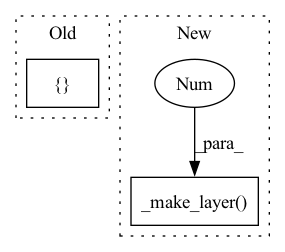

Pattern ID :26932

Before Change
class Model(ResNet):
def __init__(self):
super(Model, self).__init__(BasicBlock,[2,2,2,2])
class Loss(nn.Module):
def __init__(self):
After Change
self.conv2_x = self._make_layer(block, 64, num_block[0], 1)
self.conv3_x = self._make_layer(block, 128, num_block[1], 2)
self.conv4_x = self._make_layer(block, 256, num_block[2], 2)
self.conv5_x = self._make_layer(block, 512, num_block[3], 2)
self.avg_pool = nn.AdaptiveAvgPool2d((1, 1))
self.fc = nn.Linear(512 * block.expansion, num_classes)
def _make_layer(self, block, out_channels, num_blocks, stride):
In pattern: SUPERPATTERN
Frequency: 3
Non-data size: 2
Instances
Fragment ID: 80270920
Project Name: wwzzz/easyfl
Commit Name: ddf7d4db52a22b726ed3c58c0d4f2638f9d22ed8
Time: 2021-08-25
Author: zwang@stu.xmu.edu.cn
File Name: benchmark/cifar100/model/resnet18.py
M Class Name: Model
N Class Name: Model
M Method Name: __init__(4)
N Method Name: __init__(1)
M Parent Class: FModule
N Parent Class: ResNet
M File Name: benchmark/cifar100/model/resnet18.py
N File Name: benchmark/cifar100/model/resnet18.py
M Start Line: 137
M End Line: 138
N Start Line: 80
N End Line: 94
'>
Before Change
mid_channels = self.backbone.OUT_CHANNELS//2
strides = [2,2,2]
head = []
head.append(self._make_layer(self.backbone.OUT_CHANNELS, mid_channels, kernel_size=self.kernel_size, stride=strides[0]))
head.append(self._make_layer(mid_channels, mid_channels, kernel_size=self.kernel_size, stride=strides[1]))
head.append(self._make_layer(mid_channels, 1, kernel_size=self.kernel_size, stride=strides[2], bnrelu=False))
self.head = nn.Sequential(*head)
After Change
print("i", i)
print("strides", strides[i])
layers.append(self._make_layer(planes, planes, kernel_size=kernel_sizes[i], stride=strides[i]))
layers.append(self._make_layer(planes, 1, kernel_size=kernel_sizes[-1], stride=strides[-1], bnrelu=False))
self.layers = nn.Sequential(*layers)
def _make_layer(self, in_channels, out_channels, kernel_size=3, stride=1, bnrelu=True):
'>
Fragment ID: 80270922
Project Name: thomasverelst/blockcopy-video-processing-pytorch
Commit Name: acb596e747f6a8acdce7864a823f15bd226c1321
Time: 2021-10-14
Author: thomas.verelst@hotmail.com
File Name: blockcopy/blockcopy/policy/net.py
M Class Name: PolicyNet
N Class Name: PolicyNet
M Method Name: __init__(2)
N Method Name: __init__(2)
M Parent Class: nn.Module
N Parent Class: nn.Module
M File Name: blockcopy/blockcopy/policy/net.py
N File Name: blockcopy/blockcopy/policy/net.py
M Start Line: 15
M End Line: 39
N Start Line: 23
N End Line: 45
'>
Before Change
class Model(ResNet):
def __init__(self):
super(Model, self).__init__(BasicBlock,[2,2,2,2])
class Loss(nn.Module):
def __init__(self):
After Change
self.conv2_x = self._make_layer(block, 64, num_block[0], 1)
self.conv3_x = self._make_layer(block, 128, num_block[1], 2)
self.conv4_x = self._make_layer(block, 256, num_block[2], 2)
self.conv5_x = self._make_layer(block, 512, num_block[3], 2)
self.avg_pool = nn.AdaptiveAvgPool2d((1, 1))
self.fc = nn.Linear(512 * block.expansion, num_classes)
def _make_layer(self, block, out_channels, num_blocks, stride):
'>
Fragment ID: 80270959
Project Name: wwzzz/easyfl
Commit Name: ddf7d4db52a22b726ed3c58c0d4f2638f9d22ed8
Time: 2021-08-25
Author: zwang@stu.xmu.edu.cn
File Name: benchmark/cifar10/model/resnet18.py
M Class Name: Model
N Class Name: Model
M Method Name: __init__(4)
N Method Name: __init__(1)
M Parent Class: FModule
N Parent Class: ResNet
M File Name: benchmark/cifar10/model/resnet18.py
N File Name: benchmark/cifar10/model/resnet18.py
M Start Line: 135
M End Line: 136
N Start Line: 80
N End Line: 94